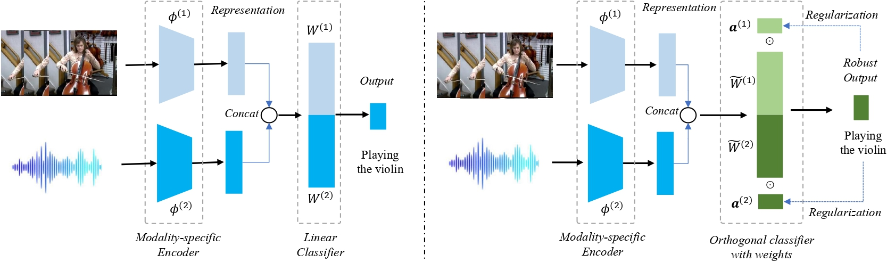
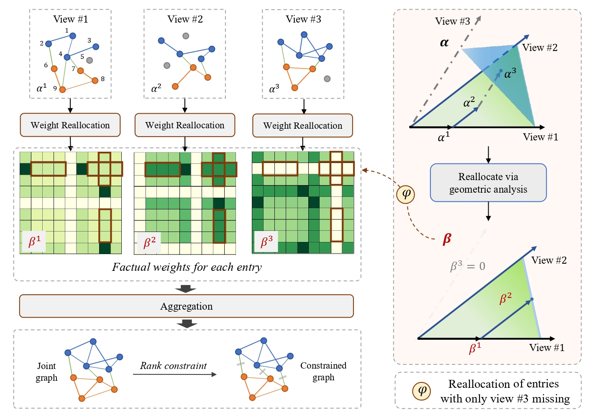

|
News
[2024-1] One paper accepted by ICLR 2024, thanks to all co-authors!
[2023-11] One paper accepted by Pattern Recognition, thanks to all co-authors!
|
|
Services
Reviewer: AAAI 2024, IJCAI 2025
|
Publications
|

|
Quantifying and Enhancing Multi-modal Robustness with Modality Preference
Zequn Yang, Yake Wei, Ce Liang, Di Hu
ICLR 2024
Multi-modal Robustness
|
|

|
Geometric-Inspired Graph-based Incomplete Multi-view Clustering
Zequn Yang, Han Zhang, Yake Wei, Zheng Wang, Feiping Nie, Di Hu
Pattern Recognition
Incomplete multi-view clustering
|
|